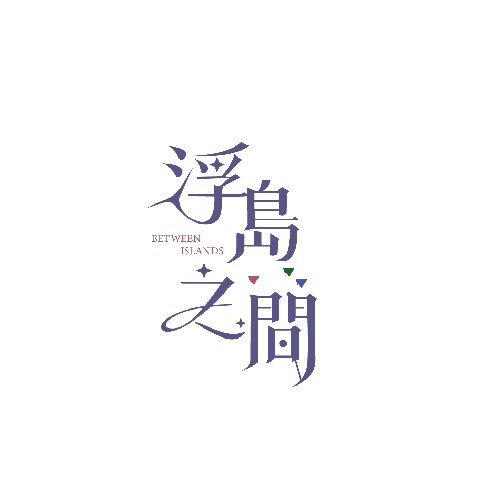

GAME 02 / TWO ISLANDS, ONE CHALLENGE
同一台裝置，兩座棋盤。消排拿分，搭橋才有資格獲勝。
共同倒數 02:00
閱讀玩法並確認後，雙人對戰才開始倒數。
分數 0
等待開始
W A S D 移動 Q 旋轉空白鍵 放置 1 2 3 選方塊
方向鍵 移動 右 Shift 旋轉Enter 放置 7 8 9 選方塊
THE RESULTS / 本局結算
BEFORE WE BEGIN / 雙人搭橋 PK
手機操作：長按候選方塊拖曳，方塊會抬到手指上方，對準預覽後放開。手機不旋轉；靠近螢幕上／下緣可自動捲動。
橫排填滿：每排 ＋150，第二排起每排額外 ＋100；得分橫排立即消除，其他方塊不下落。每次放置 ＋40，成功搭橋 ＋500，通關每剩一空格 ＋10。
兩人各自從底部連到頂部，上下左右相接才算搭橋。搭橋成功者當場結算、等待對手；無處可放或時間到仍未搭橋者，不能獲勝。已搭橋者分數最高者勝，同分並列；兩人都沒搭橋，本局無人獲勝。
兩人使用相同的初始方塊與補塊序列。對戰不提供撤回；切換分頁也不暫停倒數。也可點選各自的候選方塊與棋盤操作。
倒數只在初次按「確認，開始遊戲」後啟動。對戰中重開說明或切換分頁，時間仍繼續計算。